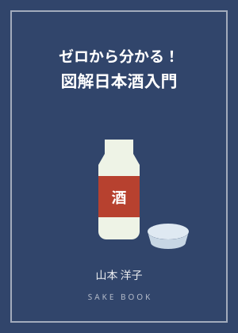
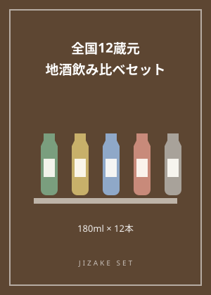

地酒のラベルの読み方入門｜精米歩合と特定名称をおさらい

地酒の瓶のラベルは、その酒の「設計図」です。原料米の品種、精米歩合、特定名称、日本酒度や酸度――読み方が分かると、酒屋の棚の前で迷う時間が、学びの時間に変わります。今回は地酒検定の教科書の内容をもとに、ラベルの読み方の基本を整理します。お酒は20歳になってから楽しむものです。このコラムは、地酒の文化を学ぶための読み物としてお読みください。
精米歩合は、玄米を削ったあとに残った米の割合を示します。60%なら、4割を削ったという意味です。純米大吟醸・大吟醸は50%以下、吟醸系は60%以下、本醸造は70%以下が要件です。数字が小さいほど手間がかかる造りであることの目安になりますが、数字だけで酒の優劣が決まるものではありません。
ラベルの特定名称は、精米歩合と醸造アルコールの有無で決まります。「純米」と付く酒は、米と米麹のみで造られ、醸造アルコールを添加していないことが条件です。地酒紹介の各地域ページで紹介している飲み比べセットも、ラベルの特定名称を比べながら見ると、産地ごとの設計の違いが見えてきます。
日本酒度は比重をもとにした指標で、プラス側が辛口寄り、マイナス側が甘口寄りの目安とされます。酸度やアミノ酸度も味わいの傾向を知る手がかりです。ただし、これらはあくまで目安であり、数字は「絶対の評価」ではなく「比べるための物差し」として使うのが、ラベル読みの基本姿勢です。
地酒検定の教科書第3章・第5章の範囲です。「純米大吟醸は精米歩合50%以下で醸造アルコール無添加」「本醸造は70%以下」「日本酒度はプラス側が辛口寄りの目安」「人肌燗は約35℃、熱燗は約50℃」の4点を確実に押さえておきましょう。
ラベルが読めるようになると、地酒紹介の10地域のページも違って見えてきます。水と米の個性が、数字と名称にどう表れるのか――産地の個性とラベルの対応を、ぜひ比べてみてください。お酒は20歳になってから。
この記事のおすすめ本

表紙イメージ（実際の表紙とは異なります）
PR 日本酒の本
ゼロから分かる！ 図解日本酒入門
著者：山本洋子
日本酒の原料や造り、特定名称酒の分類、味わいの傾向などを、図解でやさしく解説した入門書です。地酒検定の教科書と合わせて、日本酒の基礎を整理するのに使えます。
Amazonで見る価格はAmazonでご確認ください／リンク先：Amazon.co.jp

パッケージのイメージ（実際の商品とは異なります）
PR 日本酒セット
蔵べるシリーズ 全国12蔵元 地酒飲み比べセット 180ml×12本（純米吟醸・大吟醸入り）
メーカー：ドウシシャ（DOSHISHA）
北海道の千歳鶴から高知の土佐菊水まで、全国12蔵元の地酒を180ml瓶で詰め合わせた飲み比べセットです。櫻政宗の大吟醸、白龍の純米吟醸など、純米吟醸・大吟醸を含むラインナップと表示されています。お酒は20歳になってから。画像はパッケージのイメージです。
Amazonで見る価格はAmazonでご確認ください／リンク先：Amazon.co.jp
当サイトは、Amazon.co.jpを宣伝しリンクすることによってサイトが紹介料を獲得できる手段を提供することを目的に設定されたアフィリエイトプログラムである、Amazonアソシエイト・プログラムの参加者です。価格・在庫はリンク先でご確認ください。